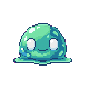

실시간 액션 전투 개발 계획 v2
걸어다니는 몬스터 기준으로 다시 짠 RPG ZZU 액션 전투 로드맵 · 2026-07-20
한 줄 요약: 필드를 돌아다니는 몬스터는 배틀용 정적 그림이 아니라 주인공과 같은 '걷기 캐릭터칩'으로 그려야 합니다. 확인해 보니 이 엔진은 걷기 캐릭터칩 시스템을 이미 갖추고 있고, 필드 몬스터도 이미 그걸로 걸어다닙니다. 그래서 개발은 "걷는 몬스터를 만드는 일"이 아니라 이미 걸어다니는 몬스터와 싸울 수 있게 하는 일입니다.
v1 계획에서 몬스터 그림을 배틀 초상(monster-slime-01.png)으로 잘못 예시한 것을 바로잡고, 스프라이트 전략을 계획의 맨 앞에 배치했습니다.
🚶
걸어다니는 몬스터 — 어떤 그림을 쓰는가
아래 몬스터들은 이미지 파일이 아니라, 이 엔진이 NPC에게 쓰는 것과 같은 방식으로 지금 재생 중인 '걷기 애니메이션'입니다.
아래로 걷기↓ down
왼쪽으로← left
오른쪽으로→ right
위로 걷기↑ up
다른 몬스터같은 시트, 2번째 칸
동물 칩Animal.png
- 캐릭터칩 1칸 = 몬스터 1마리. 왼쪽 그림은 시트에서 몬스터 한 마리 분(3칸 × 4줄)을 확대한 것입니다.
- 가로 3칸 = 걷기 프레임. 왼발→정지→오른발. 이 3장을 번갈아 보여주면 걷는 것처럼 보입니다. 엔진은 이미
0→1→2→1순서로 재생합니다 (charsetMotion.ts). - 세로 4줄 = 방향. 위에서부터 아래·왼쪽·오른쪽·위. 몬스터가 방향을 틀면 줄만 바꿔 끼우면 됩니다.
- 시트 1장(288×256)에 몬스터 8마리. 이 레포에는 몬스터 시트 3장 + 동물 시트가 번들되어 있습니다.
- 주인공·NPC·몬스터 전부 같은 규격. 그래서 걷기·방향전환·충돌 코드를 새로 만들 필요가 없습니다.

Monster1.png — 걷기 몬스터 8마리 (288×256, EasyRPG 규격)

Monster2.png — 추가 8마리. Monster3.png, Animal.png도 번들
🎨
스프라이트 전략 — v2 계획의 핵심 수정
두 종류의 몬스터 그림을 용도대로 분리합니다. 섞어 쓰면 안 됩니다.
✅ 필드에서 돌아다닐 때 → 걷기 캐릭터칩
액션 전투의 몬스터는 무조건 이것입니다. 4방향 걷기 프레임이 있어서 추격·도망·방향전환이 자연스럽습니다. 엔진의 이동 렌더러가 프레임 애니메이션을 자동으로 처리하므로 개발자가 애니메이션 코드를 쓸 일이 없습니다.
easyrpg/charset/Monster1~3.png · Animal.png
❌ 배틀 초상 → 턴제 전투 화면 전용

monster-slime-01.png 같은 큰 정적 그림은 화면이 전환되는 턴제 배틀에서만 씁니다. 방향도 걷기 프레임도 없어서 필드에 놓으면 미끄러지는 종이인형처럼 보입니다. v1 보고서가 이 그림을 예시로 쓴 것이 잘못이었습니다.
1
걷기는 엔진이 알아서 한다
NPC에게 쓰는 이동 렌더러(charsetMotion.ts)가 프레임을 80ms 간격으로 넘깁니다. 액션 전투의 몬스터도 같은 묘버(mover)를 쓰면 걷기 애니메이션은 공짜입니다.
2
공격·피격 포즈는 없다 — 효과로 해결한다
캐릭터칩에는 걷기 프레임뿐이라 "검을 휘두르는 포즈"가 없습니다. 대신 하얗게 점멸(피격), 붉게 물들기(선딜), 화면 흔들림, 타격 이펙트 오버레이로 표현합니다. 이 방식이 RM 계열의 정석이고, 필요한 도구(맵 애니메이션 오버레이, 주스 헬퍼)가 이미 있습니다.
3
몬스터별 그림 연결도 이미 있다
몬스터 종(species) 데이터에 fieldCharsetId(필드 캐릭터칩) 필드가 이미 존재합니다. 새 스키마 없이 "이 몬스터는 이 걷기 칩"을 지정할 수 있습니다.
🧩
뭐가 이미 있고, 뭘 새로 만드나
전부 소스 코드에서 직접 확인했습니다.
| 부품 | 상태 | 액션 전투에서 하는 일 |
|---|---|---|
걷기 애니메이션 charsetMotion.ts | 그대로 | 몬스터가 4방향으로 걸어다니는 모습. 프레임 재생·방향 전환 자동 |
필드 몬스터 스폰 fieldSpawns.ts | 확장 | 몇 마리를 어디에 낼지, 죽으면 몇 초 뒤 다시 낼지. 지금은 닿으면 턴제 전투로 넘기는데, 그 갈림길을 액션으로 바꿈 |
추격 AI chaseAi.ts | 그대로 | 플레이어를 A*로 쫓아오기. 시야 범위·포기 거리 이미 있음 |
몬스터 필드 그림 지정 fieldCharsetId | 그대로 | 종마다 어떤 걷기 칩을 쓸지 연결 (기본값: monster1 시트) |
이동·충돌 collision.ts | 그대로 | 벽 통과 불가, 대각선 미끄러짐. 공격 범위 판정에도 재사용 |
타격 효과 battleJuice.ts + 맵 애니메이션 | 그대로 | 맞는 순간 멈칫(히트스톱), 화면 흔들림, 타격 이펙트 재생 |
데미지 계산 battleDamage.ts | 그대로 | 공격력·방어력·속성으로 데미지 산출. 턴제와 같은 공식이라 밸런스 통일 |
사망·재시도 checkpoints.ts | 그대로 | HP 0 → 게임오버 → 체크포인트에서 다시 시도 |
| 공격 판정 (히트박스) | 신규 | 검이 닿는 범위(전방 부채꼴)와 맞는 판정, 무적시간, 넉백 — 엔진에 없는 개념, 새로 만듦 |
| 액션 전투 루프 | 신규 | 매 프레임 입력→이동→판정을 도는 시뮬레이션. src/action/ 신설 |
| 몬스터 공격 패턴 | 신규 | 접촉 데미지, 선딜(붉은 점멸 예고)→공격→후딜 상태기계 |
| 전투 HUD | 신규 | HP 하트, 무기 슬롯. 이 엔진 최초의 자유 HUD |
🗺️
4단계 개발 로드맵
각 단계가 끝나면 그 상태로 플레이 가능합니다.
A
일단 때리고 맞는다
걸어다니는 슬라임을 검으로 쳐서 죽이고, 맞으면 HP가 닳는다
- 공격 키 추가 (Space=공격 / Z=조사 분리)
- 공격 판정: 전방 부채꼴 × 몬스터 겹침 검사
- 몬스터 HP + 넉백 + 사망 (걷기 칩 그대로, 피격은 하얀 점멸)
- 플레이어 피격: 무적시간 0.8초 + HP 하트 HUD
- 죽으면 기존 게임오버→재시도 루프로
B
몬스터가 패턴을 갖는다
선딜이 읽히는 근접형, 탄을 쏘는 원거리형, 돌진형
- 상태기계: 배회 → 추격(기존 AI) → 선딜 → 공격 → 후딜
- 선딜 예고: 붉은 점멸 + 바닥 범위 표시
- 투사체: 직선으로 날아가 벽에 닿으면 소멸 (번들 Arrow 그림)
- 돌진형: 거리가 가까워지면 예고 후 직선 돌진
C
플레이어 빌드가 생긴다
무기별 손맛 차이, 액션 스킬, 회피
- 무기 프로필: 대검=느리고 넓게 / 단검=빠르고 좁게
- 액션 스킬: MP를 써서 탄환·범위기 발동
- 회피: 이미 있는 달리기(Shift)에 짧은 무적 부여
- 속성 상성 연결 (불속성 검 vs 풀 몬스터)
D
프롬프트로 만든다
AI가 액션 던전을 한 줄로 저작
- AI 도구: 액션 몬스터 배치·액션 맵 설정 쓰기 도구
- DB 에디터: 몬스터에 액션 프로필 탭 (필드 칩 미리보기 포함)
- 헤드리스 전투 시뮬레이션으로 밸런스 회귀 테스트
- 데모 던전 제작 + Supabase 저장·재로드 검증 (하드 룰)